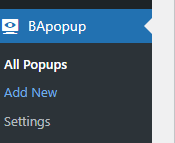

Installation
Requirements
WordPress
Version 5.6 or higher
PHP
Version 7.4 or higher
Elementor
Optional - for advanced design features
Installation Steps
1. Download
Download the plugin from WordPress repository or GitHub releases.
https://github.com/yourusername/bapopup/releases/latest
2. Upload
Upload via WordPress admin panel:
- Go to Plugins > Add New
- Click "Upload Plugin"
- Choose the downloaded zip file
- Click "Install Now"
3. Activate
After installation, click "Activate Plugin"
Post-Installation
After activation, you'll find "BApopUp" in your WordPress admin menu.
